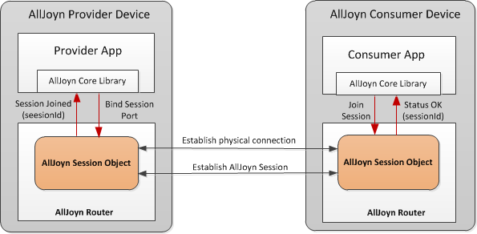
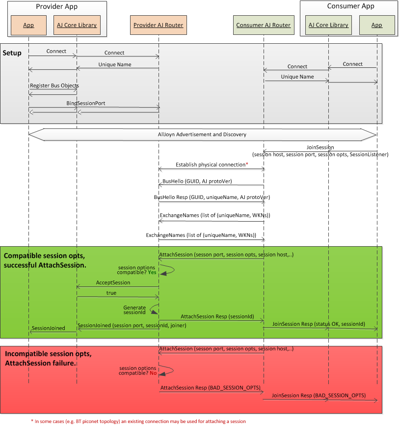
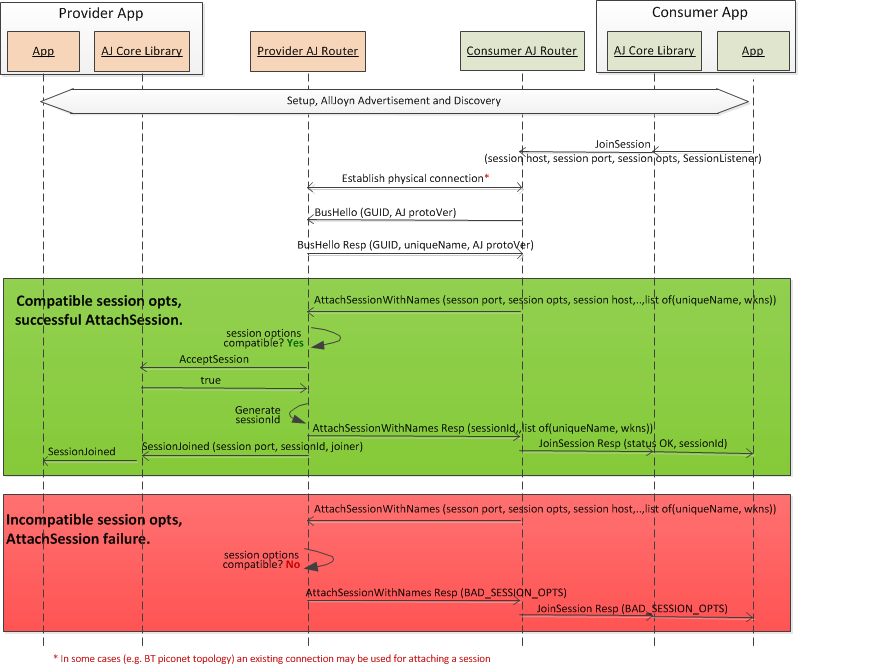
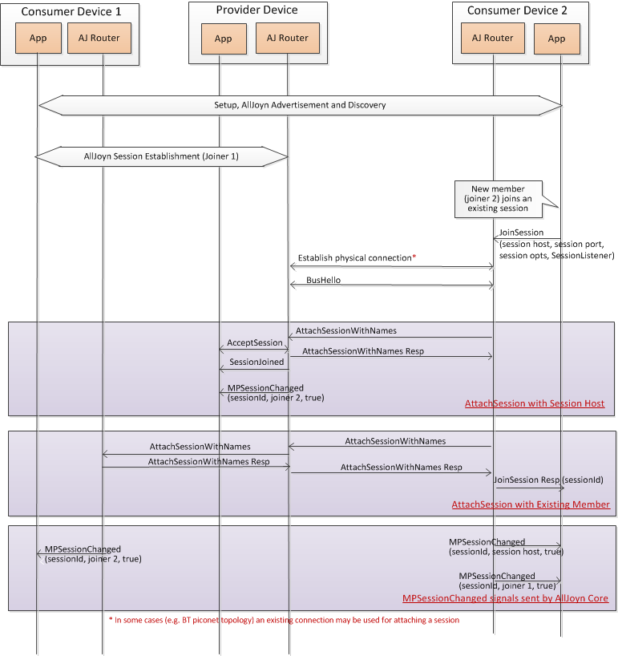
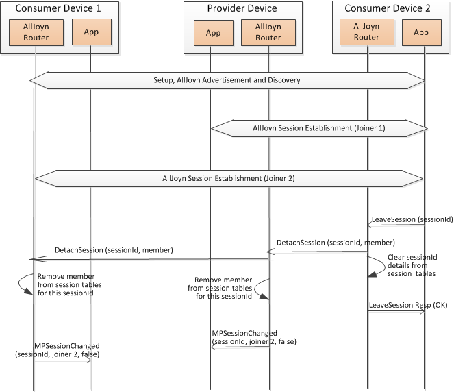
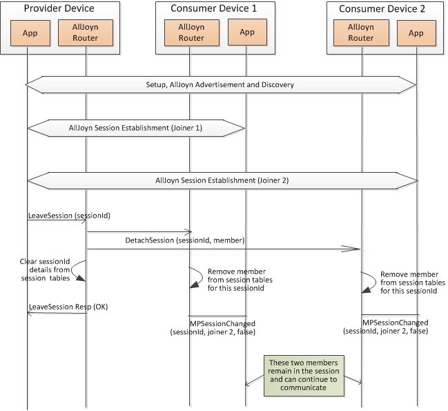

AllJoyn™ Session
Overview
After an AllJoyn consumer has discovered some desired services offered by provider devices, the next step is to establish an AllJoyn session with the provider to consume those services. An AllJoyn session is a logical connection between consumer and provider applications that allows these applications to communicate with each other and exchange data. A provider application creates an AllJoyn session and waits for consumer applications to join the session. The application that creates the session is the owner of the session (session host), and other applications are termed as joiners in that session.
On the provider side, the app binds a session port with the AllJoyn core library, specifying a list of session options (e.g., transports, session type, etc.) and then listens for consumers to join the session. The session port is typically known ahead of time to both the consumer and the provider app. Alternately, the session port can be discovered via the Announcement message received from that provider.
On the consumer side, the app requests the AllJoyn bus to join the session with a given provider app by specifying the session port, well-known name/unique name for the service, and session options (transport, session type, etc.). After this, the AllJoyn router initiates a session establishment flow between the consumer and the provider apps. A unique session ID gets assigned by the provider to the AllJoyn session after the first client joins the session. The session ID is sent back to the consumer app and should be used for subsequent communication with the provider.
The following figure shows the high-level architecture for the AllJoyn session establishment.

Figure: AllJoyn session establishment architecture
The provider app binds a session port with the AllJoyn router for a given service. The combination of (well-known name/unique name and session port) uniquely identifies the endpoint. The consumer app starts a join session with the (well-known name/unique name + session port number) of the provider app. The AllJoyn router on the consumer side establishes a physical connection with the provider AllJoyn router based on already discovered information as part of the discovery step. Currently, this involves establishing a TCP connection or if a UDP Transport is used between the two routers for session setup, no physical channel needs to be established.
After physical connection is established, the consumer AllJoyn router starts the session establishment with the provider side. The provider AllJoyn router assigns a unique session ID for the session and also creates a session map storing the relevant session information. Once the session is established, a Session Joined callback is sent to the provider app with generated session ID. The consumer app receives a Status OK response for the join session call that includes the session ID. A session map also gets created on the consumer AllJoyn router side, storing session details.
Types of sessions
An AllJoyn session can be categorized into different types based on the allowed number of participants in the session or the data encapsulation option used over the session.
The AllJoyn system supports the following types of session based on allowed number of participants:
- Point-to-point session: An AllJoyn session with a single consumer (joiner) and single provider (session host) endpoints participates in the session. When either participant leaves the session, the point-to-point session ends. A SessionLost indication is sent to the remaining participant.
- Multi-Point Session: An AllJoyn session allows more than two participants. Such a session involves a provider app (session host app) and one or more consumer apps (joiner apps) participating in the same session. A multi-point session can be joined multiple times to form a single session with multiple (greater than 2) endpoints. New consumers can join a multi-point session after the session has been created, and existing consumers can leave a multi-point session. All participants in a multi-point session can communicate to each other.
In a multi-point session, all communications go through session host. Similar to a point-to-point session, a multi-point session ends when two participants are left and one of them leaves the session. A SessionLost indication is sent to the remaining participant.
The following figure depicts point-to-point and multi-point AllJoyn sessions with the multi-point session showing four participants.

Figure: AllJoyn point-to-point and multi-point session examples
Raw session
In the AllJoyn system, typical data exchange between peer nodes occurs in the form of enhanced D-Bus messages. However in some scenarios, the overhead associated with D-Bus messages may not be desirable. In such cases, raw data can be exchanged between nodes using what is called an AllJoyn raw session.
An AllJoyn raw session is used to exchange raw data between endpoints using an underlying physical connection (e.g., TCP/UDP socket-based communication). A raw session does not carry D-Bus encapsulated messages like a regular AllJoyn session. Instead, a raw session carries unencapsulated raw data directly sent over TCP/UDP sockets. A raw session can only be a point-to-point session.
NOTE: The raw session feature is only supported on the AllJoyn standard client and is not supported on thin app. This feature is being deprecated and it is recommended that developers not to use the raw session feature.
Point to Point Session establishment
The AllJoyn protocol version obtained from the BusHello message is used to determine which call flow is used.
Pre-15.04 Point to Point Session establishment
The following figure captures the AllJoyn session establishment message flow for a point-to-point session when either the producer or consumer is version 14.12 or earlier.

Figure: AllJoyn point-to-point session establishment - 14.12 or earlier
This is the message flow when either the producer or consumer is version 14.12 or earlier.
- Both the provider and consumer apps connect with their respective AllJoyn routers via the AllJoyn core library and get a unique name assigned.
- The provider app registers service Bus Objects with the AllJoyn core library.
- The provider app requests a well-known name with the AllJoyn router via the AllJoyn core library.
- The provider app binds a session port with the AllJoyn router via the AllJoyn
library's
BindSessionPortAPI. This call specifies a session port, session options, and a SessionPortListener for the session. - The consumer app discovers the provider app using the AllJoyn Advertisement and Discovery mechanism.
- The consumer app initiates joining the session with the
provider via the
JoinSessionAPI. This call specifies the unique name of session host, session port, desired session options, and a SessionListener. - The consumer side AllJoyn router establishes a physical channel with the provider side AllJoyn router (as applicable). For TCP Transport, this involves setting up a TCP connection between the two AllJoyn routers. If a UDP Transport is used between the two routers for session setup, no physical channel needs to be established.
- Once a connection is set up between the two AllJoyn buses,
the consumer AllJoyn router initiates a
BusHellomessage to send its bus GUID and AllJoyn protocol version. The provider AllJoyn router responds with its GUID, AllJoyn protocol version, and unique name. The protocol version received from the routing nodes during theBusHellostage is used to determine if the pre-15.04 or post-15.04 call flow is used. - The consumer and provider AllJoyn routers send out
ExchangeNamessignals to exchange the set of known unique names and well-known names. - The consumer AllJoyn router invokes the
AttachSessionmethod call at the provider AllJoyn router to join the session. This call specifies the session port, session options, and unique name/well-known name of the session host among other parameters. - If the session opts are compatible, the provider AllJoyn router invokes an
AcceptSessionmethod call with the provider app which returns 'true' if the session gets accepted. Refer to section Session options negotiation for details of session opts compatibility. - In case of incompatible session opts or if the session is not accepted by
the provider app, an appropriate error code is sent back. If the session gets
accepted, the provider AllJoyn router generates a unique sessionId for this
session and sends a successful response. It sends back an
AttachSessionresponse message to the consumer AllJoyn router providing the result and sessionId if applicable. - The provider AllJoyn router sends a SessionJoined signal to the provider app specifying the sessionId.
- After receiving the
AttachSessionresponse, the consumer AllJoyn router sends a JoinSession response message to the app with an OK status and provides the session Id.
Post-15.04 Point to Point Session establishment
The following figure captures the AllJoyn session establishment message flow for a point-to-point session when both the producer and consumer are version 15.04 or later.

Figure: AllJoyn point-to-point session establishment - 15.04 or later
This is the message flow when both the producer and consumer are version 15.04 or later.
- The call flow until the
BusHellostage is the same as described in Pre-15.04 Point to Point Session establishment. The protocol version received from the routing nodes during theBusHellostage is used to determine if the pre-15.04 or post-15.04 call flow is used. - The consumer AllJoyn router invokes the
AttachSessionWithNamesmethod call at the provider AllJoyn router to join the session. This call specifies the session port, session options, and unique name/well-known name of the session host among other parameters. As a part of this method call, the consumer AllJoyn router also sends out the names required for establishing the session. It may send out all names if it has been requested by the consumer or provider app. Refer to Names sent as a part of AttachSessionWithNames for more details. - If the session opts are compatible, the provider AllJoyn router invokes an
AcceptSessionmethod call with the provider app which returns 'true' if the session gets accepted. Refer to section Session options negotiation for details of session opts compatibility. - In case of incompatible session opts or if the session is not accepted by
the provider app, an appropriate error code is sent back. If the session gets
accepted, the provider AllJoyn router generates a unique sessionId for this
session. It sends back an
AttachSessionWithNamesresponse message to the consumer AllJoyn router providing the result and sessionId if applicable. The provider AllJoyn router also sends out the names required for establishing the session as a part of the response. It may send out all names if it has been requested by the consumer or provider app. Refer to Names sent as a part of AttachSessionWithNames for more details. - The provider AllJoyn router sends a SessionJoined signal to the provider app specifying the sessionId.
- After receiving the
AttachSessionWithNamesresponse, the consumer AllJoyn router sends a JoinSession response message to the app with an OK status and provides the session Id.
Multipoint Session Establishment
The following use cases illustrate various AllJoyn session scenarios:
- Establish a multi-point session
- Consumer joins an existing multi-point session
- Consumer leaves a point-to-point Session
- Consumer leaves a multi-point session with more than 2 participants
- Provider unbinds a session port
Establish a multi-point session
The following figure captures the session establishment message flow for a multi-point session between two participants.

Figure: AllJoyn session - establishing a multi-point session
A multi-point session follows same message flow as the
point-to-point session with the additional step of sending
out the MPSessionChanged signal from the AllJoyn router
to the application indicating new participant. This signal
specifies the sessionId, the unique name/well-known name
of the participant, and a flag to indicate whether the
participant was added.
Consumer joins an existing multi-point session
The following figure captures the message flow for the scenario where a new consumer joins an existing multi-point session.
In a multi-point session, the new joiner is responsible
for notifying existing participants (other than session host)
of the newly added member to the session. This is so that
existing members can update their session routing information
to include the new joiner, and future session messages can be
routed appropriately. To achieve this, the new member invokes
an AttachSession with all existing members. This results in
existing members adding the new joiner to their session-related tables.
Consumer joins an existing multi-point session - Pre-15.04 call flow

Figure: AllJoyn session - consumer joins a multi-point session - 14.12 or earlier
The message flow steps are described below.
- The provider and consumer app are set up and the consumer discovers the producer app by using the AllJoyn Advertisement and Discovery mechanism.
- The AllJoyn session establishment steps occur between joiner 1 (consumer 1) and the session host (provider) to establish a multi-point session as captured in Establish a multi-point session.
- Consumer 2 (joiner 2) wants to join the existing multi-point session, and initiates a JoinSession call with its AllJoyn router.
- The joiner 2 AllJoyn router establishes a physical channel with the provider side AllJoyn router (as applicable). For TCP Transport, this involves setting up a TCP connection between the two AllJoyn routers. If a UDP Transport is used between the two routers for session setup, no physical channel needs to be established.
- Once a connection is set up between the two AllJoyn buses,
the consumer AllJoyn router initiates a
BusHellomessage to send its bus GUID and AllJoyn protocol version. The provider AllJoyn router responds with its GUID, AllJoyn protocol version, and unique name. - The joiner 2 and provider AllJoyn routers send out
ExchangeNamessignals to exchange the set of known unique names and well-known names. The provider AllJoyn router forwards thisExchangeNamesto all other connected routers including the joiner 2 AllJoyn router. - The AllJoyn session establishment steps occur between joiner 2 and the session host to add this joiner to the existing multi-point session.
- An
MPSessionChangedsignal is sent out to the session host app informing it of new joiner in the session. - Joiner 2 receives the set of existing members for the
multi-point session from the session host as part of the
AttachSessionresponse. - Joiner 2 initiates an
AttachSessionwith every received member of the session (except the session host, which it just did using theAttachSession) and sends it to the session host. - The session host forwards this
AttachSessionto the existing session member. - Joiner 1 receives
AttachSessionfrom joiner 2 and updates its session-related tables to add joiner 2. - The AllJoyn router on joiner 1 sends out an
MPSessionChangedsignal to the app, indicating a newly added member to the multi-point session. - Joiner 2 also sends out separate
MPSessionChangedsignal to the app for each existing member of the session.
Consumer joins an existing multi-point session - Post-15.04 call flow

Figure: AllJoyn session - consumer joins a multi-point session - 15.04 or later
The message flow steps are described below.
- The provider and consumer app are set up and the consumer discovers the producer app by using the AllJoyn Advertisement and Discovery mechanism.
- The AllJoyn session establishment steps occur between joiner 1 (consumer 1) and the session host (provider) to establish a multi-point session as captured in Establish a multi-point session.
- Consumer 2 (joiner 2) wants to join the existing multi-point session, and initiates a JoinSession call with its AllJoyn router.
- The AllJoyn session establishment steps occur between joiner 2 and the session host to add this joiner to the existing multi-point session and exchanges the necessary names. Refer to Names sent as a part of AttachSessionWithNames for more details.
- An
MPSessionChangedsignal is sent out to the session host app informing it of new joiner in the session. - Joiner 2 receives the set of existing members for the
multi-point session from the session host as part of the
AttachSessionWithNamesresponse. - Joiner 2 initiates an
AttachSessionWithNameswith every received member of the session (except the session host, which it just did using theAttachSessionWithNames) to the session host. - The session host forwards this
AttachSessionWithNamesto the existing session member and sends the unique name and aliases of the joiner app and its routing node. Refer to Names sent as a part of AttachSessionWithNames for more details. - Joiner 1 receives
AttachSessionWithNamesfrom joiner 2 and updates its session-related tables to add joiner 2 and sends a response back to the session host AllJoyn Router. - The session host AllJoyn Router forwards this response back to the Joiner 2 routing node.
- The AllJoyn router on joiner 1 sends out an
MPSessionChangedsignal to the app, indicating a newly added member to the multi-point session. - Joiner 2 also sends out separate
MPSessionChangedsignal to the app for each existing member of the session.
Consumer leaves a point-to-point session
The following figure captures the message flow for the scenario where a consumer leaves an existing point-to-point session. The same message flow is also applicable for the scenario when a consumer leaves a multi-point session with only two participants.
When a participant leaves a point-to-point session or a multi-point session with only two participants, the session ends and is removed from session tables of both the participants. A participant can leave a session by initiating a LeaveSession call with the AllJoyn router. This results in a DetachSession signal being delivered to the other member of the session. Receipt of this signal triggers clearing of sessionId and other session-related information from the session tables of that member. Whenever a session ends, a SessionLost signal is sent to the application.
NOTE: Either the joiner or the host of the session can leave a session. A similar message flow is applicable when a session host leaves the session.

Figure: AllJoyn session - consumer leaves a point-to-point session
The message flow steps are described below.
- The consumer app establishes a session with the session host.
- The consumer app decides to leave the session. It invokes a LeaveSession API with the AllJoyn router via the AllJoyn core library. This call takes in the sessionId as input parameter.
- The AllJoyn router generates a DetachSession signal specifying the sessionId and the member that is leaving the session. This signal is sent to the other member in the session.
- After receiving the DetachSession signal, the AllJoyn router on the session host determines that it is the only member left in the session. As a result, it concludes that the session has ended and clears sessionId details from its session tables.
- The AllJoyn router on the consumer side clears sessionId details from its session tables and sends a successful LeaveSession response to the application.
- The AllJoyn router on the session host sends a SessionLost signal to the application indicating that the session has ended.
Consumer leaves a multi-point session
The following figure captures the message flow for the scenario where a consumer leaves a multi-point session with more than two participants. In this scenario, the session continues with remaining participants even after a member leaves the session. The remaining participants update their session tables to remove the member that left the session.

Figure: AllJoyn session - consumer leaves a multi-point session
The message flow steps are described below.
- Two consumer apps (joiner 1 and joiner 2) have joined in a single multi-point session with the provider.
- Joiner 2 decides to leave the session. It invokes a LeaveSession API with the AllJoyn router, specifying the sessionId.
- The AllJoyn router on joiner 2 generates a DetachSession signal, specifying the sessionId and the member that is leaving the session. This signal is sent as a session broadcast signal to all the other members in the session.
- Upon receiving the DetachSession signal, the AllJoyn router
involved in the multi-point session determines that there
are two or more remaining participants in the session,
meaning the session will continue to exist. As a result,
it updates its session tables to remove the member received
in the DetachSession signal for that sessionId. The AllJoyn
router then sends an
MPSessionChangedsignal to the app indicating member deletion for that session. This logic is executed by the AllJoyn router for every remaining participant in the session. - The AllJoyn router on the member leaving the session clears sessionId details from its session tables and sends a successful LeaveSession response to the application.
Provider leaves a multi-point session
The following figure captures the message flow for the scenario where a provider (session host) leaves a multi-point session with more than two participants. In this case, the session continues to exist and the remaining participants can continue to communicate; however, no new participants can join the multi-point session.

Figure: AllJoyn session - provider leaves a multi-point session
Provider unbinds a session port
The provider app can unbind a previously bound session port at any time. As a result, no new sessions can be established on that session port. Any existing sessions on that session port will continue and are not impacted. If there was any multi-point session on that session port, no new members can be added to that multi-point session.
Session options
The following tables capture the session options and values supported for the AllJoyn session. Traffic, proximity, and transports fields in the session option are specified as bit masks with values.
| Option | Description | Data type |
|---|---|---|
| traffic | Specifies type of traffic sent over the session | byte |
| isMultipoint | Specifies whether the session is multi-point or point-to-point. | bool |
| proximity | Specifies the proximity scope for this session | byte |
| transports | Specifies the allowed transports for this Session | short |
| nameTransfer | Name transfer type of session - Internal use only | byte |
Traffic session allowed values
| Name | Value | Description |
|---|---|---|
| TRAFFIC_MESSAGES | 0x01 | Use reliable message-based communication to move data between session endpoints. |
| TRAFFIC_RAW_UNRELIABLE | 0x02 | Use unreliable (e.g., UDP) socket-based communication to move data between session endpoints. This creates a raw session where MESSAGE encapsulation is not used. |
| TRAFFIC_RAW_RELIABLE | 0x04 | Use reliable (e.g., TCP) socket-based communication to move data between session endpoints. RAW. This creates a raw session where MESSAGE encapsulation is not used. |
IsMultipoint session allowed values
| Name | Value | Description |
|---|---|---|
| N/A | true | A multi-point capable session. A multi-point session can be joined multiple times to form a single session with multiple (> 2) endpoints. |
| N/A | false | Session is not multi-point capable. Each join attempt will create a new point-to-point session. |
Proximity session allowed values
NOTE: The PROXIMITY_PHYSICAL and PROXIMITY_NETWORK options are not supported semantically today, meaning no enforcement is done for spatial scope. Only bit matching is done for these options when looking to find a set of compatible set of session options. AllJoyn system provides flexibility to support specific semantics for these options in future if needed.
| Name | Value | Description |
|---|---|---|
| PROXIMITY_ANY | 0xFF | Spatial scope of the session is not limited. Session can be joined by joiners located anywhere. |
| PROXIMITY_PHYSICAL | 0x01 | Spatial scope of session is limited to the local host. Interpreted as "the same physical machine." Session can be joined by joiners located only on the same physical machine as the one hosting the session. |
| PROXIMITY_NETWORK | 0x02 | Spatial scope of session is limited to anywhere on the local logical network segment. Session can be joined by joiners located anywhere on the network. |
Transports session allowed values
| Name | Value | Description |
|---|---|---|
| TRANSPORT_NONE | 0x0000 |
Use no transport to communicate with a given session. |
| TRANSPORT_LOCAL | 0x0001 |
Use only the local transport to communicate with a given session. |
| TRANSPORT_TCP | 0x0004 |
Use only the TCP transport to communicate with a given session. |
| TRANSPORT_UDP | 0x0100 |
Use only the UDP/ARDP transport to communicate with a given session. |
| TRANSPORT_EXPERIMENTAL | 0x8000 |
Use only the experimental transport that has not yet reached the performance, stability or testing requirements of a commercialized transport to communicate with a given session. |
| TRANSPORT_IP | TRANSPORT_TCP | TRANSPORT_UDP |
Use any IP based transport to communicate with a given session |
| TRANSPORT_ANY | TRANSPORT_LOCAL | TRANSPORT_IP |
Use any commercialized transport. |
Names sent as a part of AttachSessionWithNames
AllJoyn routers only exchange names required for establishing a session unless
specifically requested by the consumer and/or producer app. The app can request
for the routers to exchange all names by invoking the SetAllNames API on the
sessionOpts or by passing exchangeAllNames=true in the SessionOpts constructor.
The app may invoke the SetSessionNames API on the sessionOpts to reset to the
default behavior of exchanging only the required names.
Behavior when Session Names option is used
Point to point session: The Consumer and Provider AllJoyn routing nodes exchange
unique name and aliases of the routing node and session host/joiner app only as
a part of the AttachSessionWithNames method call/response.
Multipoint session: The Consumer AllJoyn routing node sends the unique name and
aliases of the routing node and session joiner app only. The Provider routing
node sends the unique names and aliases of the routing node, host and existing
members and their routing nodes. When the provider forwards an
AttachSessionWithNames to an existing session member, it sends out the unique
name and aliases of the joiner app and routing node.
Behavior when All Names option is used
Unique names of all locally and remotely connected router and leaf nodes are
exchanged as a part of the AttachSessionWithNames and its response.
In this case the names exchanged are identical to the ones exchanged between pre-15.04 routing nodes except that the names are exchanged as a part of AttachSessionWithNames instead of a separate ExchangeNames signal.
Session options negotiation
A compatible set of session options must be agreed upon
between two endpoints to establish a session. If a compatible
set of session options cannot be established between two
endpoints, session establishment fails.
Session options negotiation occurs between session options
provided by the provider app at the time of invoking
BindSessionPort(...) and the session options requested
by the consumer app when invoking the JoinSession(...).
- For certain session options, e.g., traffic, an exact match must occur between the provider and consumer session options for negotiation to be successful.
- For certain session options, e.g. isMultipoint, the option provided by the producer is used.
- For other session options, the negotiation happens to the lowest common session option level. Exact details of session options negotiation is outside the scope of this document.
Detecting missing or slow endpoints
The AllJoyn Router supports a probing mechanism to detect other missing routers and missing applications so that resources can be cleaned up for missing endpoints. Separate logic is supported for detecting other missing routers and applications as described in Probing mechanism for detecting missing routers and Probing mechanism for detecting missing applications.
The AllJoyn router also supports logic to detect and disconnect any AllJoyn applications or other AllJoyn routers that are slower to read data than the minimum desired performance level. This logic is captured in Detecting a slow reader.
Once a remote endpoint (an application or anther router) is
disconnected based on probing mechanism or slow reader detection
logic, the AllJoyn router will clean up any connection slots,
active advertisements and sessions associated with the remote
endpoint. The AllJoyn router will also send SessionLost,
MPSessionChanged and DetachSession signals to participants
that are in a session with the disconnected remote application
or in a session with applications connected to the disconnected
remote router.
Probing mechanism for detecting missing routers
The AllJoyn router provides a SetLinkTimeout() API which
can be invoked by the application to detect missing routers.
The application provides an idle timeout value as part of the
API, which should be greater than or equal to the minimum value
(40 sec) defined at the router. A single probe is sent to the
other router after inactivity is detected for idle timeout period.
If no response is received in probe timeout period (10 sec), that
router is disconnected and all associated connection slots,
active advertisements and sessions are cleaned up.
This functionality to detect missing routers is not enabled
by default. An app needs to call the SetLinkTimeout() API
to enable it.
Probing mechanism for detecting missing applications
The AllJoyn router provides a probing mechanism using DBus pings to detect missing AllJoyn applications. The following parameters determine the transmission schedule of the DBus pings: Number of probes(N): Total number of DBus pings sent. Idle timeout(I): Time after which the first DBus ping will be sent. * Probe timeout(P): Time after which subsequent DBus ping will be sent if a reply to the previous ping has not yet been received.
The values of the above parameters are specific to the AllJoyn TCP versus UDP Transport over which the AllJoyn application is connected to the AllJoyn router.
The following figure shows the transmission schedule of the DBus pings.

Figure: Probe transmission schedule for detecting missing apps
Connected AllJoyn applications will be able to select values
for idle and probe timeouts within a transport specific range
by invoking the SetIdleTimeouts() API. The call specifies
the requested idle and probe timeouts and returns the actual
values for the idle and probe timeouts.
Detecting a slow reader
In order to maintain quality of service, the AllJoyn router will disconnect any AllJoyn applications or AllJoyn routers that are slower than the minimum desired performance level.
The AllJoyn router will disconnect a remote AllJoyn application/router in either of the following scenarios: Once the network send buffer on the router and network receive buffer on remote application/router are both full, the remote application/router does not read data fast enough to be able to fit the pending AllJoyn message within the Send Timeout period. More than (10 * Send timeout) control messages originating from the router are currently queued for the remote application/router.
The value of the Send timeout is specific to the TCP or UDP transport over which the remote AllJoyn application/router is connected to this AllJoyn router.
Methods/signals used for an AllJoyn session
The AllJoyn framework supports session-related functionality as part of the following AllJoyn interfaces:
- org.alljoyn.Daemon
- org.alljoyn.Bus
- org.alljony.Bus.Peer.Session
This section provides a summary of methods and signals from these interfaces used for AllJoyn session-related functionality.
org.alljoyn.Daemon
The org.alljoyn.Daemon interface is the main over-the-wire interface used for communication between two AllJoyn router components. The following tables summarize the org.alljoyn.Daemon interface methods and signals used for session-related functions.
org.alljoyn.Daemon interface methods
| Method name | Description |
|---|---|
| AttachSession | Method for a remote AllJoyn router to attach a session with this AllJoyn router. |
| GetSessionInfo | Method for a remote AllJoyn router to get session information from this AllJoyn router. |
org.alljoyn.Daemon.AttachSession method parameters
| Parameter name | Direction | Description |
|---|---|---|
| session port | in | AllJoyn session port |
| Joiner | in | Unique name of the joiner |
| creator | in | Unique name or well-known name of the session host |
| dest | in | Unique name of the destination for the AttachSession.
|
| b2b | in | Unique name of the bus-to-bus end point on the joiner side. This is used to set up the message routing path for the session. |
| busAddr | in | A string indicating how to connect to the bus endpoint, for example, "tcp:192.23.5.6, port=2345" |
| optsIn | in | Session options requested by the joiner. |
| status | out | Session join status |
| sessionId | out | Assigned session ID |
| optsOut | out | Final selected session options |
| members | out | List of session members |
org.alljoyn.Daemon.AttachSessionWithNames method parameters
| Parameter name | Direction | Description |
|---|---|---|
| session port | in | AllJoyn session port |
| Joiner | in | Unique name of the joiner |
| creator | in | Unique name or well-known name of the session host |
| dest | in | Unique name of the destination for the AttachSession.
|
| b2b | in | Unique name of the bus-to-bus end point on the joiner side. This is used to set up the message routing path for the session. |
| busAddr | in | A string indicating how to connect to the bus endpoint, for example, "tcp:192.23.5.6, port=2345" |
| optsIn | in | Session options requested by the joiner. |
| names | in | List of unique and well known names |
| status | out | Session join status |
| sessionId | out | Assigned session ID |
| optsOut | out | Final selected session options |
| members | out | List of session members |
| names | out | List of unique and well known names |
org.alljoyn.Daemon.GetSessionInfo method parameters
| Parameter name | Direction | Description |
|---|---|---|
| creator | in | Unique name for the app that bound the session port. |
| session port | in | Session port. |
| optsIn | in | Session options requested by the joiner. |
| busAddr | out | Returned bus address for the session to use when attempting to create a connection for joining the session, for example, "tcp:192.23.5.6, port=2345" |
org.alljoyn.Daemon interface signals
| Signal name | Description |
|---|---|
| ExchangeNames | A signal that informs remote AllJoyn router of names available on the local AllJoyn router. |
| DetachSession | A signal sent out to detach a joiner from an existing session |
org.alljoyn.Daemon.ExchangeNames signal parameters
| Parameter name | Description |
|---|---|
| uniqueName | List of one or more unique names available on the local AllJoyn router. |
| WKNs | List of one or more well-known names registered with each of the known unique name on the local AllJoyn router. |
org.alljoyn.Daemon.DetachSession signal parameters
| Parameter name | Description |
|---|---|
| sessionId | AllJoyn session ID |
| Joiner | Unique name of the joiner |
org.alljoyn.Bus
The org.alljoyn.Bus interface is the main AllJoyn interface between the application and the AllJoyn router. The following tables summarize the org.alljoyn.Bus interface methods and signals used for session-related functions.
org.alljoyn.Bus interface methods
| Method name | Description |
|---|---|
| BusHello | Method used to exchange identifiers. This can be used between app and AllJoyn router, as well as between two AllJoyn router components. |
| BindSessionPort | Method for an application to initiate binding a session port with the AllJoyn bus. |
| UnbindSessionPort | Method for an application to unbind a session port with the AllJoyn bus. |
| JoinSession | Method for an application to initiate joining a session. |
| LeaveSession | Method for an application to initiate leaving an existing session. |
org.alljoyn.Bus.BusHello method parameters
| Parameter name | Direction | Description |
|---|---|---|
| GUIDC | in | GUID of the client AllJoyn router. |
| protoVerC | in | AllJoyn protocol version of client AllJoyn router. |
| GUIDS | out | GUID of the service side AllJoyn router. |
| uniqueName | out | Unique name assigned to the bus-to-bus endpoint between two AllJoyn router components. |
| protoVerS | out | AllJoyn protocol version of service side of AllJoyn router. |
org.alljoyn.Bus.BindSessionPort method parameters
| Parameter name | Direction | Description |
|---|---|---|
| sessionPort | in | Specified session port. Set to SESSION_PORT_ANY if app is asking AllJoyn router to assign a session port. |
| opts | in | Specified session options. |
| resultCode | out | Result status |
| sessionPort | out | Same as input sessionPort unless SESSION_PORT_ANY was specified. In the latter case, set to an AllJoyn router-assigned session port. |
org.alljoyn.Bus.UnbindSessionPort method parameters
| Parameter name | Direction | Description |
|---|---|---|
| sessionPort | in | Specified session port. |
| resultCode | out | Result status |
org.alljoyn.Bus.JoinSession method parameters
| Parameter name | Direction | Description |
|---|---|---|
| sessionHost | in | Well-known name/unique name of the session creator. |
| sessionPort | in | Specified session port. |
| optsIn | in | Session options requested by the joiner. |
| resultCode | out | Result status |
| sessionId | out | Assigned session ID. |
| opts | out | Final selected session options. |
org.alljoyn.Bus.LeaveSession method parameters
| Parameter name | Direction | Description |
|---|---|---|
| sessionId | in | Session ID of the session. |
| resultCode | out | Result status |
org.alljoyn.Bus interface signals
| Signal name | Description |
|---|---|
| SessionLost | A signal that informs application when a session ends. |
| MPSessionChanged | A signal that informs application on changes to an existing session. |
org.alljoyn.Bus.SessionLost signal parameters
| Parameter name | Description |
|---|---|
| sessionId | Session ID of the session that was just lost. |
org.alljoyn.Bus.MPSessionChanged signal parameters
| Parameter name | Description |
|---|---|
| sessionId | Session ID that changed. |
| name | Unique name of the session member that changed. |
| isAdd | Flag indicating whether member was added. Set to true if the member has been added. |
org.alljoyn.Bus.Peer.Session
The org.alljoyn.Bus.Peer.Session interface is an AllJoyn interface between application and the AllJoyn router. The following tables summarize the org.alljoyn.Bus.Peer.Session interface methods and signals used for session-related functions.
org.alljoyn.Bus.Peer.Session interface methods
| Method name | Description |
|---|---|
| AcceptSession | Method for invoking accepting a session locally on the session host. |
org.alljoyn.Bus.Peer.Session.AcceptSession parameters
| Parameter name | Direction | Description |
|---|---|---|
| sessionPort | in | Session port that received the join request. |
| sessionId | in | ID for the new session (if accepted). |
| creatorName | in | Session creator unique name. |
| joinerName | in | Session joiner unique name. |
| opts | in | Session options requested by the joiner. |
| isAccepted | out | Set to true if the creator accepts the session. |
org.alljoyn.Bus.Peer.Session interface signals
| Signal name | Description |
|---|---|
| SessionJoined | A signal sent locally on the session host to inform it that a session was successfully joined. |
org.alljoyn.Bus.Peer.SessionJoined signal parameters
| Parameter name | Description |
|---|---|
| sessionPort | Session port of the session which was just lost. |
| sessionId | ID for the new session. |
| creatorName | Session creator unique name. |
| joinerName | Session joiner unique name. |